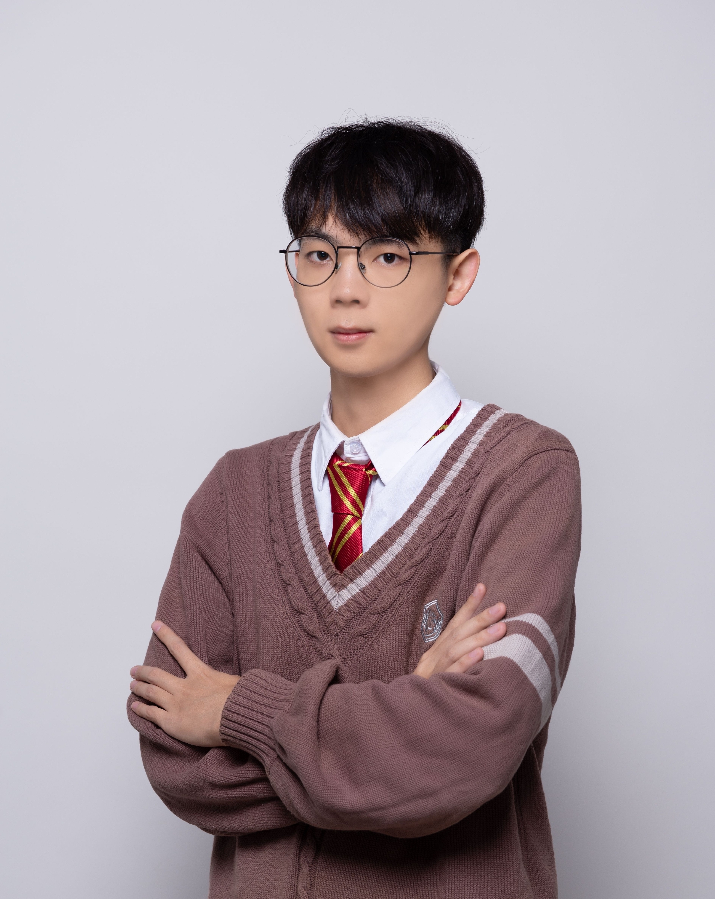

Yunxiang LiPhD Student
University of Texas Southwestern Medical Center |
 |


Biography [CV]
I am a PhD student at UT Southwest Medical Center this year, working on medical image analysis. I also worked closely with Professor Qun Jin, Waseda University, Foreign Member of the Engineering Academy of Japan (EAJ), Professor Huiyu Zhou, University of Leicester, Associate Editor/Area Chair of more than ten journals or conferences and Professor Qianni Zhang, Queen Mary University of London. I did research on infant brain MRI processing, supervised by Professor Li Wang, University of North Carolina at Chapel Hill. I was a visiting student at Prof Chunhua Shen's lab.
I serve as a reviewer for multiple SCI journals and conferences, including Pattern Recognition (PR), IEEE Journal of Biomedical and Health Informatics (JBHI), Medical & Biological Engineering & Computing (MBEC), International Conference on Medical Image Computing and Computer Assisted Intervention (MICCAI), and International Conference on Robotics and Automation (ICRA), etc.
My ultimate goal is to achieve completely automatic diagnosis of medical image based on Artificial Intelligence. My research interest includes medical image classification, medical image segmentation, Transformer in vision, unsupervised domain adaptation and semi-supervised segmentation, etc.
News
- [08/2022] Our new work has been published on Scientific Data (IF=8.5009)!
- [12/2021] Our new work about unsupervised domain adaptation is available at arxiv now!
- [11/2021] I started the research on skull stripping and infant brain segmentation, supervised by Dr. Li Wang, University of North Carolina at Chapel Hill.
- [11/2021] Our paper about Automated Evaluation of Root Canal Therapy was accepted by IEEE Journal of Biomedical and Health Informatics (JCR Q1)!
- [09/2021] I was invited to present our work orally in MICCAI 2021 MLMI!
- [01/2021] Our paper about COVID‐19 detection in chest x‐ray images was accepted by Medical Physics (JCR Q1)!.
Experience
-
University of Texas Southwestern Medical CenterMar. 2022 – Present
PhD Student
Advisor: Prof. You Zhang
-
Zhejiang UniversityMar. 2022 – Present
Research Intern
Advisor: Prof. Chunhua Shen
-
University of North Carolina at Chapel HillSep. 2021 – Mar. 2022
Research Intern
Topic: Infant Brain MRI Processing, Advisor: Prof. Li Wang
-
Department of Ophthalmology, Zhejiang UniversityMar. 2021 – Sep. 2021
Research Intern
Topic: Automatic Segmentation and Diagnosis of Ophthalmic Images
-
Microelectronics CAD Center, Hangzhou Dianzi UniversityAug. 2019 – Sep. 2021
Topic: Automatic Diagnosis of Root Canal Therapy
-
The University of AdelaideJan. 2019 – Feb. 2019
Visiting Student
Selected Publications | Google Scholar
| /*2022*/ | |
|
CDNet: Contrastive Disentangled Network for Fine-Grained Image Categorization of Ocular B-Scan Ultrasound Ruilong Dan*, Yunxiang Li*, Yijie Wang, Gangyong Jia, Ruiquan Ge, Juan Ye, Qun Jin, Yaqi Wang |
|
|
FIVES: A Fundus Image Vessel Segmentation Dataset Kai Jin, Xingru Huang, Jingxing Zhou, Yunxiang Li, Yan Yan, Yibao Sun, Qianni Zhang, Yaqi Wang, Juan Ye# |
|
|
LViT: Language meets Vision Transformer in Medical Image Segmentation Zihan Li*, Yunxiang Li*, Qingde Li, You Zhang, Puyang Wang, Dazhou Guo, Le Lu, Dakai Jin, Qingqi Hong |
|
|
Source-free Domain Adaptation for Skull Stripping Yunxiang Li, Ruilong Dan, Shuai Wang, Xiangde Luo, Yifan Cao, Chenghao Tan, Huiyu Zhou, Yaqi Wang#, Li Wang# ISBI (1-page abstract); Under review in MICCAI (full paper), 2022. [paper] [code] |
|
|
Overview of global publications on machine learning in diabetic retinopathy from 2011 to 2021: Bibliometric analysis An Shao*, Kai Jin*, Yunxiang Li, Lixia Lou, Wuyuan Zhou, Juan Ye# Major revision for annals of medicine (IF = 4.709), 2022. [paper] [code] |
|
|
A Self-Supervised Learning based Framework for Eyelid Malignant Melanoma Diagnosis in Whole Slide Images Zijing Jiang, Jun Wang, Yibao Sun, Yunxiang Li, Dechao Chen, Yaqi Wang# Under Review in IEEE-ACM Transactions on Computational Biology and Bioinformatics, 2022. [paper] [code] |
|
| /*2021*/ | |
|
AGMB-Transformer: Anatomy-Guided Multi-Branch Transformer Network for Automated Evaluation of Root Canal Therapy. Yunxiang Li*, Guodong Zeng*, Yifan Zhang, Jun Wang, Qun Jin, Lingling Sun, Qianni Zhang, Qisi Lian, Guiping Qian, Neng Xia, Ruizi Peng, Kai Tang, Shuai Wang#, Yaqi Wang# IEEE Journal of Biomedical and Health Informatics (IF = 5.772), 2021. [paper] [code] |
|
|
A Cascade-SEME network for COVID-19 detection in chest c-ray images Dailin Lv, Yaqi Wang#, Shuai Wang, Qianni Zhang, Wuteng Qi, Yunxiang Li, Lingling Sun# |
|
|
Dispensed Transformer for Unsupervised Domain Adaptation.” Yunxiang Li, Jingxiong Li, Ruilong Dan, Shuai Wang, Kai Jin, Guodong Zeng, Jun Wang, Xiangji Pan, Qianni Zhang, Huiyu Zhou, Qun Jin, Li Wang, Yaqi Wang Under Review in IEEE Transactions on Medical Imaging, 2021. [paper] [code] |
|
|
GT U-Net: A U-Net Like Group Transformer Network for Tooth Root Segmentation Yunxiang Li, Shuai Wang, Jun Wang, Guodong Zeng, Wenjun Liu, Qianni Zhang, Qun Jin, Yaqi Wang# Oral, MICCAI, Machine Learning in Medical Imaging, 2021. [paper] [code] |
|
|
FIVES: A Fundus Image Vessel Segmentation Dataset Kai Jin, Xingru Huang, Jingxing Zhou, Yunxiang Li, Yan Yan, Yibao Sun, Qianni Zhang, Yaqi Wang, Juan Ye# |
|
|
Globally and Locally Feature Aggregating Fundus Image Quality Assessment via Spatial Information Retained Multiscale Network Kai Jin, Zhiyuan Gao, Yaqi Wang, Yunxiang Li, Xiaoyu Ma, Juan Ye# Under Review in Medical Image Analysis, 2021. [paper] [code] |
|
|
Lumen and EEM segmentation in IVUS images using attention R2U-net with boundary sensitive representation Xingru Huang, Yue Gu, Yunxiang Li, Jiongxiong Li, Kai jin, Yaqi Wang, Yibao Sun, Qianni Zhang# |
|
Professional Activities
| IEEE Student Member |
| MICCAI Member |
| Medical Image Computing and Computer Assisted Intervention (MICCAI), 2022 | International Conference on Robotics and Automation (ICRA), 2021 | Medical & Biological Engineering & Computing (MBEC) | IEEE Journal of Biomedical and Health Informatics (JBHI) | Pattern Recognition (PR) |